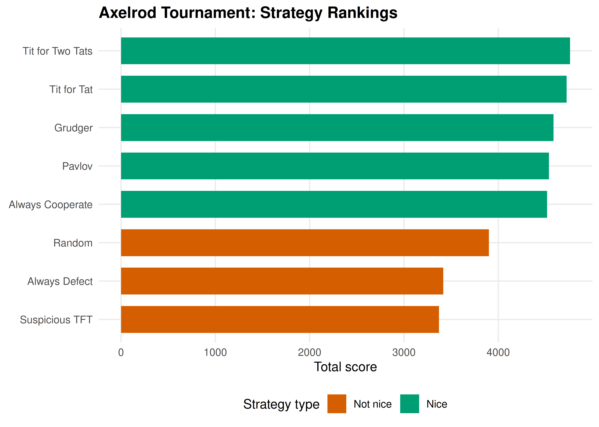
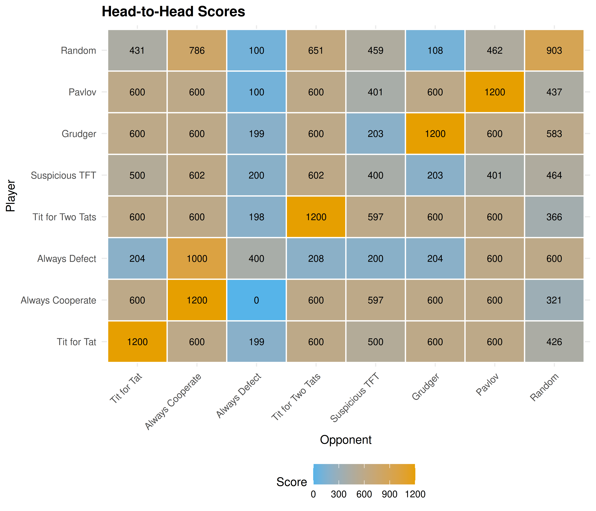

18 Replicating Axelrod’s Tournament
A computational replication of Axelrod’s 1980 iterated Prisoner’s Dilemma tournament in R, exploring why Tit for Tat won and what it teaches about the evolution of cooperation.
Learning objectives
- Describe the design of Axelrod’s 1980 iterated Prisoner’s Dilemma tournament and its key findings.
- Implement a round-robin tournament harness in R with configurable strategies.
- Reproduce the result that Tit for Tat outperforms more complex strategies.
- Visualize tournament outcomes and analyze what makes a strategy successful.
18.1 Motivation
In 1980, political scientist Robert Axelrod invited game theorists to submit strategies for an iterated Prisoner’s Dilemma computer tournament. Each strategy would play every other strategy (and itself) in a round-robin, accumulating points over 200 rounds per match. The submissions ranged from simple to elaborate — some used sophisticated pattern recognition, others were just a few lines of code.
The winner was the simplest strategy entered: Tit for Tat, submitted by Anatol Rapoport. It cooperates on the first move and then copies whatever the opponent did on the previous move. Axelrod (1981) ran a second tournament after publishing the first results, inviting even more entries with knowledge of the first outcome. Tit for Tat won again.
This result — that a strategy requiring no memory beyond the last round, no exploitation, and no complex reasoning could outperform sophisticated alternatives — became one of the most influential findings in the study of cooperation. In this chapter, we replicate the tournament in R.
18.2 Theory
18.2.1 The iterated Prisoner’s Dilemma
The stage game payoffs follow the standard convention:
| Cooperate | Defect | |
|---|---|---|
| Cooperate | R, R | S, T |
| Defect | T, S | P, P |
With the canonical values \(T = 5\), \(R = 3\), \(P = 1\), \(S = 0\): temptation to defect is high, but mutual cooperation (\(R = 3\)) beats the average of exploitation and being exploited (\((T + S)/2 = 2.5\)).
When the game is repeated, players can condition their current action on the history of play. This opens the door to conditional cooperation: a player might cooperate as long as the opponent cooperates, but punish defection.
18.2.2 Axelrod’s four properties of successful strategies
Analyzing the tournament results, Axelrod identified four properties shared by the top-performing strategies:
- Nice — never the first to defect.
- Retaliatory — punish defection promptly.
- Forgiving — return to cooperation after the opponent does.
- Clear — behavior is predictable, enabling mutual cooperation.
Tit for Tat exemplifies all four: it never defects first (nice), defects immediately after the opponent does (retaliatory), cooperates immediately when the opponent returns to cooperation (forgiving), and its logic is transparent (clear).
18.3 Implementation in R
18.3.1 Strategy definitions
We define a library of classic strategies. Each strategy is a function that takes two arguments — the player’s own history and the opponent’s history — and returns "C" or "D".
strategy_tit_for_two_tats <- function(own, opp) {
n <- length(opp)
if (n < 2) return("C")
if (opp[n] == "D" && opp[n - 1] == "D") "D" else "C"
}
strategy_suspicious_tft <- function(own, opp) {
if (length(opp) == 0) return("D")
opp[length(opp)]
}
strategy_grudger <- function(own, opp) {
if (any(opp == "D")) "D" else "C"
}
strategy_pavlov <- function(own, opp) {
if (length(own) == 0) return("C")
last_own <- own[length(own)]
last_opp <- opp[length(opp)]
if (last_own == last_opp) "C" else "D"
}
strategy_random <- function(own, opp) {
sample(c("C", "D"), 1)
}
strategies <- list(
"Tit for Tat" = strategy_tit_for_tat,
"Always Cooperate" = strategy_always_cooperate,
"Always Defect" = strategy_always_defect,
"Tit for Two Tats" = strategy_tit_for_two_tats,
"Suspicious TFT" = strategy_suspicious_tft,
"Grudger" = strategy_grudger,
"Pavlov" = strategy_pavlov,
"Random" = strategy_random
)18.3.2 Round-robin tournament
run_tournament <- function(strategies, rounds = 200) {
names_s <- names(strategies)
n <- length(strategies)
results <- matrix(0, nrow = n, ncol = n,
dimnames = list(names_s, names_s))
for (i in seq_len(n)) {
for (j in seq(i, n)) {
scores <- run_match(strategies[[i]], strategies[[j]], rounds)
results[i, j] <- results[i, j] + scores[1]
results[j, i] <- results[j, i] + scores[2]
}
}
results
}
set.seed(42)
results <- run_tournament(strategies, rounds = 200)
totals <- rowSums(results)
ranking <- sort(totals, decreasing = TRUE)
cat("Tournament Results (total scores):\n\n")#> Tournament Results (total scores):
for (i in seq_along(ranking)) {
cat(sprintf(" %d. %-20s %5d\n", i, names(ranking)[i], ranking[i]))
}#> 1. Tit for Two Tats 4761
#> 2. Tit for Tat 4725
#> 3. Grudger 4585
#> 4. Pavlov 4538
#> 5. Always Cooperate 4518
#> 6. Random 3900
#> 7. Always Defect 3416
#> 8. Suspicious TFT 337218.3.3 Visualizing the results
ranking_df <- tibble(
strategy = factor(names(ranking), levels = rev(names(ranking))),
score = as.integer(ranking)
)
nice_strategies <- c("Tit for Tat", "Always Cooperate", "Tit for Two Tats",
"Grudger", "Pavlov")
ranking_df$nice <- names(ranking) %in% nice_strategies
p_ranking <- ggplot(ranking_df, aes(x = score, y = strategy, fill = nice)) +
geom_col(width = 0.7) +
scale_fill_manual(values = c("TRUE" = okabe_ito[3], "FALSE" = okabe_ito[6]),
labels = c("TRUE" = "Nice", "FALSE" = "Not nice"),
name = "Strategy type") +
theme_publication() +
labs(title = "Axelrod Tournament: Strategy Rankings",
x = "Total score", y = NULL)
p_ranking
Figure 18.1: Tournament ranking by total score. Tit for Tat wins the round-robin tournament, consistent with Axelrod’s original finding. Nice strategies (those that never defect first) cluster at the top.
save_pub_fig(p_ranking, "axelrod-ranking", width = 7, height = 5)18.3.4 Head-to-head heatmap
heatmap_df <- as.data.frame(as.table(results))
names(heatmap_df) <- c("Player", "Opponent", "Score")
p_heat <- ggplot(heatmap_df, aes(x = Opponent, y = Player, fill = Score)) +
geom_tile(colour = "white", linewidth = 0.5) +
geom_text(aes(label = Score), size = 2.8) +
scale_fill_gradient(low = okabe_ito[2], high = okabe_ito[1]) +
theme_publication(base_size = 10) +
theme(axis.text.x = element_text(angle = 45, hjust = 1)) +
labs(title = "Head-to-Head Scores",
x = "Opponent", y = "Player")
p_heat
Figure 18.2: Head-to-head scores in the round-robin tournament. Rows are the focal player; columns are the opponent. Always Defect scores highest against Always Cooperate but poorly against retaliatory strategies.
save_pub_fig(p_heat, "axelrod-heatmap", width = 7, height = 6)18.4 Worked example
Let us trace a single match between Tit for Tat and Suspicious TFT (which defects first, then copies):
set.seed(42)
h1 <- character(0)
h2 <- character(0)
for (r in 1:10) {
a1 <- strategy_tit_for_tat(h1, h2)
a2 <- strategy_suspicious_tft(h2, h1)
h1 <- c(h1, a1)
h2 <- c(h2, a2)
}
trace_df <- tibble(
Round = 1:10,
`Tit for Tat` = h1,
`Suspicious TFT` = h2
)
cat("First 10 rounds: Tit for Tat vs. Suspicious TFT\n\n")#> First 10 rounds: Tit for Tat vs. Suspicious TFT
print(trace_df, n = 10)#> # A tibble: 10 × 3
#> Round `Tit for Tat` `Suspicious TFT`
#> <int> <chr> <chr>
#> 1 1 C D
#> 2 2 D C
#> 3 3 C D
#> 4 4 D C
#> 5 5 C D
#> 6 6 D C
#> 7 7 C D
#> 8 8 D C
#> 9 9 C D
#> 10 10 D CThe pattern reveals alternating retaliation: Suspicious TFT defects in round 1, Tit for Tat retaliates in round 2, and the two lock into a cycle of mutual recrimination. This is a well-known weakness of Tit for Tat — it can get trapped in defection cycles against strategies that defect first. Tit for Two Tats avoids this by requiring two consecutive defections before retaliating, at the cost of being more exploitable.
18.5 Extensions
- Evolutionary dynamics: What happens when successful strategies reproduce and unsuccessful ones die out? This leads to replicator dynamics on strategy populations (20) and the concept of evolutionarily stable strategies (21).
- Spatial structure: When players interact only with neighbors on a lattice, cooperation can survive even without reciprocity (19).
- Noise: In noisy environments where actions are sometimes misperceived, Tit for Tat’s strict reciprocity becomes a liability. Generous Tit for Tat (cooperate with some probability after opponent’s defection) outperforms in noisy settings.
- For the original analysis, see Axelrod (1981). For a modern computational treatment with hundreds of strategies, see the Python
axelrodlibrary (accessible viareticulate; see 14 for the general pattern).
Exercises
Add a strategy. Implement a “Gradual” strategy that retaliates with an increasing number of defections after each opponent defection (1 defection after the first, 2 after the second, etc.), then returns to cooperation. Add it to the tournament and report the new rankings.
Vary the number of rounds. Run the tournament with 50, 200, and 1000 rounds. How do the rankings change? Why might Always Defect do better in shorter tournaments?
Cooperation rate. Modify
run_match()to return the cooperation rate (fraction of rounds where both players cooperated) in addition to scores. Which pair of strategies achieves the highest mutual cooperation rate? Which achieves the lowest?
Solutions appear in D.